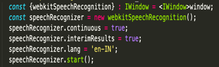
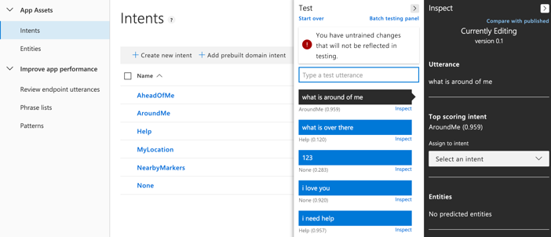
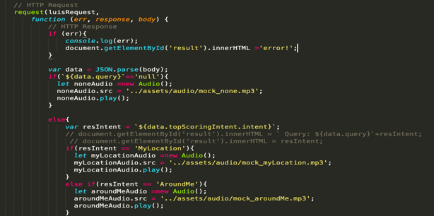
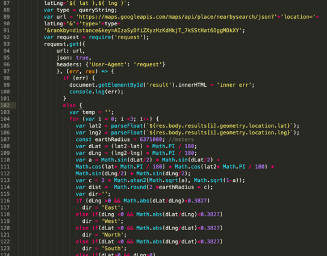
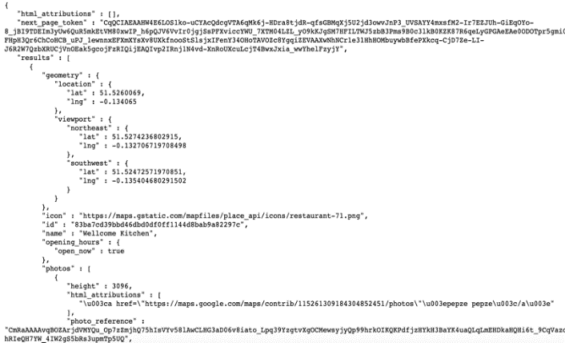
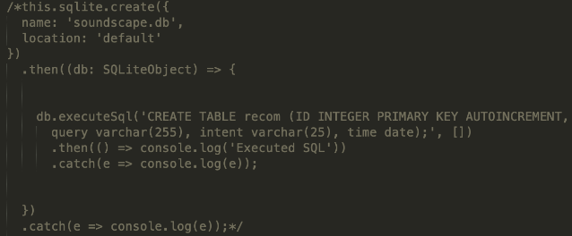
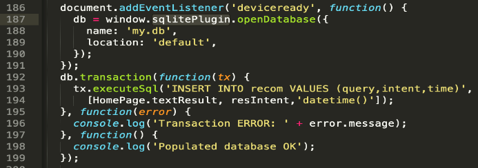
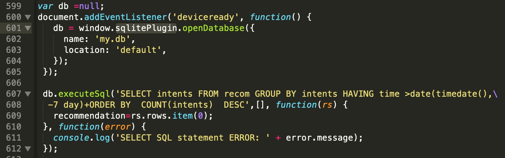

There are 5 key parts in this system.
1. Voice recognition
2. Language understanding
3. Data storage
4. Place query
5. Text to speech
A brief explanation of the architecture diagram:
User speak to the app via microphone, then Voice recognition API transform the voice
into text. Then the text is passed to Language understanding API by http request and
then receive and analyse the response to find out the intent. After that, store the
query questions, matched intent and time into database. If the intent is to query nearby
places, the device will use GPS service to get latitude and longitude of user’s location
and then make request to google map API to ask for nearby places. If the intent is to ask
for recommendation, then the app will look into database to make recommendation. For
example, if the user ask for ‘nearby shops’ most frequent in the recent 7 days, then the
app may recommend the stores around of the user. In the end, all the results will be
transformed from text to speech using ionic ‘text-to-speech’ plugin, then the uses can
hear about the response from speakers or earphones.
The database is needed for ‘recommendation’ feature. The structure of the database we used is very simple.
| recom |
| ID (INTEGER) query (VARCHAR(255)) intent (VARCHAR(25)) time DATE |
We implemented “speech to text” function with Mozilla Web Speech API. Actually, there are different Speech APIs available online such as Microsoft Speech API and Google Speech API, but I decided to use Mozilla Web Speech API because it is more reliable and easier to use. With this function, if I click the ‘Cortana’ button, the app will start to record the voice. Then it will translate the recorded voice to text. Because the app is in developing and testing state, the converted text will be displayed on the screen.
We implemented language understanding feature. We used Microsoft Language Understanding Service (LUIS) as the back end for this language understanding part of our app. A cloud-based LUIS app is created by uploading a .json file in which I defined the intent and entities. Then we train the app on LUIS account dashboard. After lots of inputs and training, we published the app and get the authoring key and endpoint key. Here is the dashboard of LUIS.
It is a difficult part, but we managed to connect speech to text function with language understanding function in the end. The mechanism is, when a user speaks to the app, the app can firstly transfer the voice to a text string using speech API, and then pass the string to the LUIS using LUIS API with HTTP request. And then receive HTTP response to find out the intent. Finally, according to the type of intent, call corresponding functions. To be noticed, the HTTP response returns a json file. This received json file has to be analysed to get the intent of the speech. Here is main part of code which implements this feature.
To get information about nearby places, I used GPS service and google map places API. Here is some code which made HTTP request to the API server and an example returned JSON file response.
For place distance, we use Manhattan Distance [4] instead of distance between two points of navigation route. And I used algorithm for calculating distance between two points on a sphere surface.
 Since our target users are bland people, the App should interact with users by voice. So, ‘text to speech’ is the key function of our App.
I used ionic text-to-speech plugin to implement this function. The main code is shown below:
import { TextToSpeech } from '@ionic-native/text-to-speech';
constructor(tts: TextToSpeech…) {…}
this.tts.speak({text: msg, locale: 'en-GB', rate: 1.7})
.then(function () { alert('success'); },
function (reason) {alert(reason); });
Since this tts plugin is not working on Cordova platform, it brings inconvenient during development phase. So when I develop the App on Mac by browser, I replace the code by the following:
var msg = new SpeechSynthesisUtterance(temp);
window.speechSynthesis.speak(msg);
But at finial testing and release phase, I restored the code to make sure it is working on target devices (iPhones).
The database is needed for ‘recommendation’ feature. I tried to use Azure cloud database to connect with ionic App, but there are lots of problems when I trying to do this, so I switched to an alternative way, which is ionic plugin SQLite database. The structure of the database table is very simple, the code which creates the database and table is shown below.
The following codes gives example to insert data and make query to the database.The recommendation is made base on the information in the database, e.g. if the user ask for ‘nearby shops’ most frequent in the recent 7 days, then the app may recommend the stores around of the user.
 